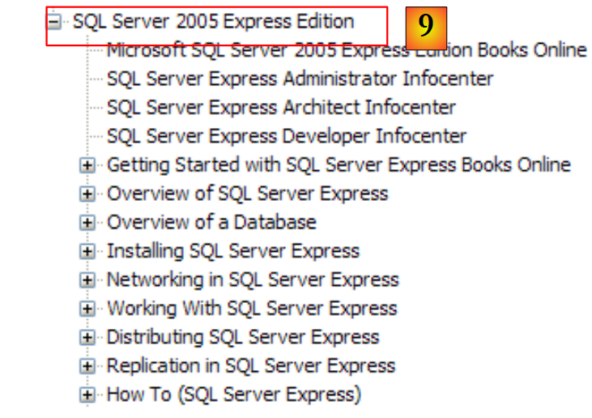
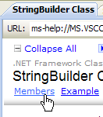
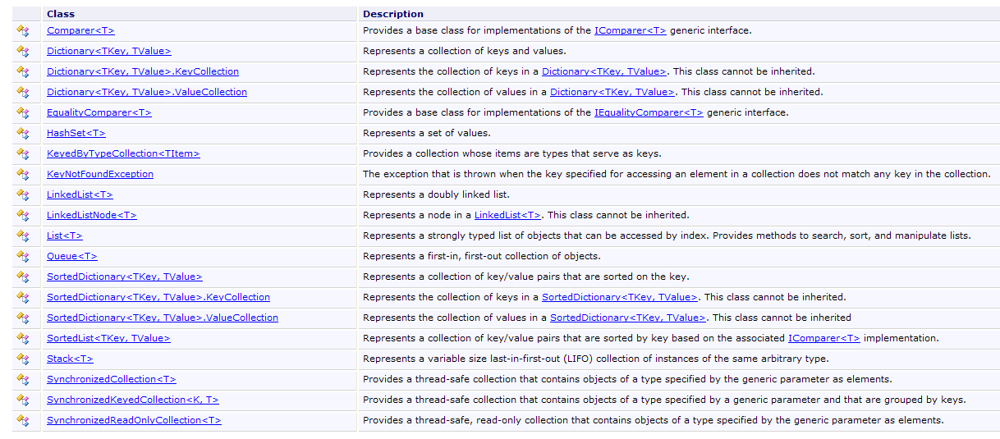
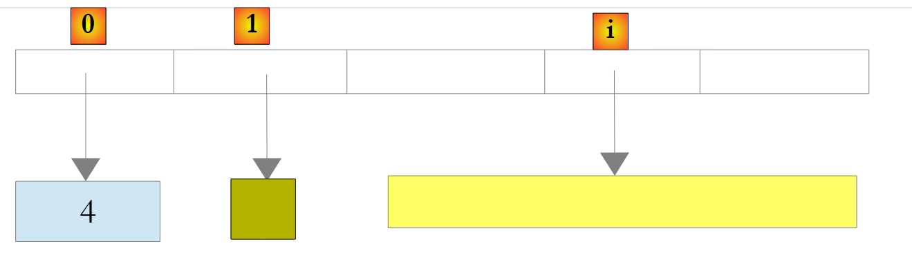
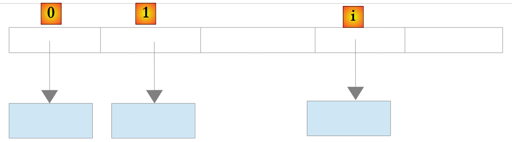
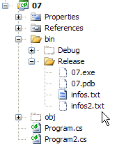
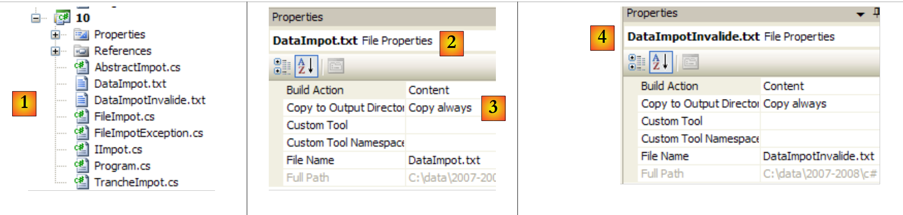

5. Commonly Used .NET Classes
Here we present a few frequently used classes from the .NET platform. First, we show how to obtain information about the several hundred available classes. This help is indispensable even for experienced C# developers. The quality of help (easy access, clear organization, relevance of information, etc.) can make or break a development environment.
5.1. Searching for Help on .NET Classes
Here are some tips for finding help with Visual Studio.NET
5.1.1. Help/Contents
 |
- In [1], select the Help/Contents option from the menu.
- In [2], select the Visual C# Express Edition option
- in [3], the C# help tree
- At [4], another useful option is .NET Framework, which provides access to all the classes in the .NET Framework.
Let’s take a look at the chapter headings in the C# Help:
 |
- [1]: An overview of C#
- [2]: a series of examples on certain aspects of C#
- [3]: a C# tutorial—could be a good substitute for this document…
 |
- [4]: for a detailed look at C#
- [5]: Useful for C++ or Java developers. Helps you avoid a few pitfalls.
- [6]: When looking for examples, you can start here.
 |
- [7]: What you need to know to create graphical user interfaces
- [8]: to make better use of the Visual Studio Express IDE
 |
- [9]: SQL Server Express 2005 is a high-quality DBMS distributed for free. We will use it in this course.
The C# help is only part of what a developer needs. The other part is help on the hundreds of classes in the .NET framework that will make their work easier.
 |
- [1]: Select the .NET Framework help
- [2]: The help is located in the .NET Framework SDK branch
- [3]: The .NET Framework Class Library branch lists all .NET classes according to the namespace to which they belong
- [4]: The System namespace, which was most frequently used in the examples from the previous chapters
 |
- [5]: In the System namespace, an example—here, the DateTime structure
 |
- [6]: Help for the DateTime structure
5.1.2. Help/Index/Search
The help provided by MSDN is vast, and you may not know where to look. In that case, you can use the help index:
 |
- In [1], use the [Help/Index] option if the Help window is not already open; otherwise, use [2] in an existing Help window.
- In [3], specify the scope of the search
- In [4], specify what you are looking for—in this case, a class
- in [5], the answer
Another way to look up help is to use the Help’s search function:
 |
- In [1], use the [Help/Search] option if the Help window is not already open; otherwise, use [2] in an existing Help window.
- In [3], specify what you are looking for
- in [4], filter the search areas
 |
- in [5], the results are displayed as different topics where the searched text was found.
5.2. Strings
5.2.1. The System.String class
 |  |  |
The System.String class is identical to the simple string type. It has many properties and methods. Here are a few of them:
| |
| |
| |
| |
| |
| |
| |
| |
| |
| |
| |
|
Note an important point: when a method returns a string, it is a different string from the one on which the method was applied. Thus, S1.Trim() returns a string S2, and S1 and S2 are two different strings.
A string C can be considered an array of characters. Thus
- C[i] is the i-th character of C
- C.Length is the number of characters in C
Consider the following example:
using System;
namespace Chap3 {
class Program {
static void Main(string[] args) {
string aString = "the bird flies above the clouds";
display("aString=" + aString);
display("aString.Length=" + aString.Length);
display("string[10]=" + string);
display("string.IndexOf(\"flies\")=" + string.IndexOf("flies"));
print("string.IndexOf("x")=" + string.IndexOf("x"));
print("string.LastIndexOf('a')=" + string.LastIndexOf('a'));
print("aString.LastIndexOf('x')=" + aString.LastIndexOf('x'));
display("aString.Substring(4,7)=" + aString.Substring(4, 7));
display("aString.ToUpper()=" + aString.ToUpper());
print("aString.ToLower()=" + aString.ToLower());
display("aString.Replace('a','A')=" + aString.Replace('a', 'A'));
string[] fields = string.Split(null);
for (int i = 0; i < fields.Length; i++) {
display("fields[" + i + "]=[" + fields[i] + "]");
}//for
display("Join(\":\",fields)=" + System.String.Join(":", fields));
print("(\" abc \").Trim() = [" + " abc ".Trim() + "]");
}//Main
public static void display(string msg) {
// display msg
Console.WriteLine(msg);
}//display
}//class
}//namespace
The execution produces the following results:
Let's consider a new example:
using System;
namespace Chap3 {
class Program {
static void Main(string[] args) {
// the line to be parsed
string line = "one:two::three:";
// field separators
char[] separators = new char[] { ':' };
// split
string[] fields = line.Split(separators);
for (int i = 0; i < fields.Length; i++) {
Console.WriteLine("Fields[" + i + "]=" + fields[i]);
}
// join
Console.WriteLine("join=[" + System.String.Join(":", fields) + "]");
}
}
}
and the execution results:
The Split method of the String class allows you to put elements of a character string into an array. The definition of the Split method used here is as follows:
public string[] Split(char[] separator);
array of characters. These characters represent the characters used to separate the fields in the string. Thus, if the string is "field1, field2, field3", we can use separator=new char[] {','}. If the separator is a sequence of spaces, we use separator=null. | |
array of strings where each element of the array is a field of the string. |
The Join method is a static method of the String class:
public static string Join(string separator, string[] value);
array of strings | |
a string that will serve as the field separator | |
a string formed by concatenating the elements of the value array, separated by the separator string. |
5.2.2. The System.Text.StringBuilder class
 |  |  |
Previously, we mentioned that methods of the String class applied to a string S1 return another string S2. The System.Text.StringBuilder class allows you to manipulate S1 without having to create a string S2. This improves performance by avoiding the proliferation of strings with very short lifespans.
The class supports various constructors:
| |
|
A StringBuilder object works with blocks of character capacity to store the underlying string. By default, the capacity is 16. The third constructor listed above allows you to specify the block capacity. The number of character-capacity blocks required to store a string S is automatically adjusted by the StringBuilder class. There are constructors to set the maximum number of characters in a StringBuilder object. By default, this maximum capacity is 2,147,483,647.
Here is an example illustrating this concept of capacity:
using System.Text;
using System;
namespace Chap3 {
class Program {
static void Main(string[] args) {
// str
StringBuilder str = new StringBuilder("test");
Console.WriteLine("size={0}, capacity={1}", str.Length, str.Capacity);
for (int i = 0; i < 10; i++) {
str.Append("test");
Console.WriteLine("size={0}, capacity={1}", str.Length, str.Capacity);
}
// str2
StringBuilder str2 = new StringBuilder("test", 10);
Console.WriteLine("size={0}, capacity={1}", str2.Length, str2.Capacity);
for (int i = 0; i < 10; i++) {
str2.Append("test");
Console.WriteLine("size={0}, capacity={1}", str2.Length, str2.Capacity);
}
}
}
}
- Line 7: Creating a StringBuilder object with a block size of 16 characters
- Line 8: str.Length is the current number of characters in the str string. str.Capacity is the number of characters that the current str string can store before a new block is allocated.
- Line 10: str.Append(String S) appends the String-type string S to the StringBuilder-type string str.
- Line 14: Creation of a StringBuilder object with a block capacity of 10 characters
The result of the execution:
These results show that the class follows its own algorithm for allocating new blocks when its capacity is insufficient:
- lines 4-5: capacity increased by 16 characters
- lines 8-9: capacity increased by 32 characters, even though 16 would have been sufficient.
Here are some of the class's methods:
| |
| |
| |
| |
|
Here is an example:
using System.Text;
using System;
namespace Chap3 {
class Program {
static void Main(string[] args) {
// str3
StringBuilder str3 = new StringBuilder("test");
Console.WriteLine(str3.Append("abCD").Insert(2, "xyZT").Remove(0, 2).Replace("xy", "XY"));
}
}
}
and its results:
5.3. Arrays
Arrays are derived from the Array class:
 |  |  |
The Array class has various methods for sorting an array, searching for an element in an array, resizing an array, etc. We present some of the properties and methods of this class. Almost all of them are overloaded, meaning they exist in different variants. Every array inherits them.
Properties
Methods
|
The following program illustrates the use of certain methods of the Array class:
using System;
namespace Chap3 {
class Program {
// search type
enum SearchType { linear, dichotomous };
// main method
static void Main(string[] args) {
// read array elements typed from the keyboard
double[] elements;
Input(out elements);
// Display unsorted array
Display("Unsorted array", elements);
// Linear search in the unsorted array
Search(elements, SearchType.linear);
// Sort the array
Array.Sort(elements);
// Display sorted array
Display("Sorted Array", elements);
// Binary search in the sorted array
Search(elements, SearchType.binary);
}
// Enter values for the elements array
// elements: reference to the array created by the method
static void Input(out double[] elements) {
bool finished = false;
string response;
bool error;
double element = 0;
int i = 0;
// Initially, the array does not exist
elements = null;
// loop to populate the array
while (!finished) {
// question
Console.Write("Element (real) " + i + " of the array (nothing to end with): ");
// read the response
response = Console.ReadLine().Trim();
// end input if string is empty
if (response.Equals(""))
break;
// Check input
try {
element = Double.Parse(response);
error = false;
} catch {
Console.Error.WriteLine("Invalid input, please try again");
error = true;
}//try-catch
// if no error
if (!error) {
// add one more element to the array
i += 1;
// resize the array to accommodate the new element
Array.Resize(ref elements, i);
// insert new element
elements[i - 1] = element;
}
}//while
}
// Generic method to display the elements of an array
static void Display<T>(string text, T[] elements) {
Console.WriteLine(text.PadRight(50, '-'));
foreach (T element in elements) {
Console.WriteLine(element);
}
}
// Search for an element in the array
// elements: array of real numbers
// SearchType: binary or linear
static void Search(double[] elements, SearchType type) {
// Search
bool finished = false;
string result = null;
double element = 0;
bool error = false;
int i = 0;
while (!finished) {
// query
Console.WriteLine("Element searched for (nothing to stop): ");
// read and verify response
response = Console.ReadLine().Trim();
// done?
if (response.Equals(""))
break;
// verification
try {
element = Double.Parse(response);
error = false;
} catch {
Console.WriteLine("Error, please try again...");
error = true;
}//try-catch
// if no error
if (!error) {
// search for the element in the array
if (type == SearchType.binary)
// binary search
i = Array.BinarySearch(elements, element);
else
// linear search
i = Array.IndexOf(elements, element);
// Display result
if (i >= 0)
Console.WriteLine("Found at position " + i);
else
Console.WriteLine("Not in the array");
}//if
}//while
}
}
}
- Lines 27–62: The `Saisie` method enters the elements of an array typed on the keyboard. Since the array cannot be sized in advance (its final size is unknown), we are forced to resize it with each new element (line 57). A more efficient algorithm would have been to allocate space for the array in groups of N elements. However, an array is not designed to be resized. This scenario is better handled with a list (ArrayList, List<T>).
- Lines 75–113: The Search method allows you to search the array for an element entered via the keyboard. The search method differs depending on whether the array is sorted or not. For an unsorted array, a linear search is performed using the IndexOf method on line 106. For a sorted array, a binary search is performed using the BinarySearch method on line 103.
- Line 18: The elements array is sorted. Here, we use a variant of Sort that has only one parameter: the array to be sorted. The ordering relation used to compare the array elements is the implicit one for those elements. Here, the elements are numeric. The natural order of numbers is used.
The screen output is as follows:
5.4. Generic collections
In addition to arrays, there are various classes for storing collections of elements. Generic versions are available in the System.Collections.Generic namespace, and non-generic versions are available in System.Collections. We will introduce two frequently used generic collections: the List and the Dictionary.
The list of generic collections is as follows:

5.4.1. The generic List<T> class
The System.Collections.Generic.List<T> class allows you to implement collections of objects of type T whose size varies during program execution. An object of type List<T> is handled almost like an array. Thus, the element i of a list l is denoted as l[i].
There is also a non-generic list type: ArrayList, which can store references to any objects. ArrayList is functionally equivalent to *List<Object>. An *ArrayList object looks like this:
 |
In the example above, the elements 0, 1, and i of the list point to objects of different types. An object must first be created before its reference can be added to the ArrayList. Although an ArrayList stores object references, it is possible to store numbers in it. This is done through a mechanism called boxing: the number is encapsulated in an object O of type Object, and it is the reference O that is stored in the list. This mechanism is transparent to the developer. We can thus write:
This will produce the following result:
 |
In the example above, the number 4 has been encapsulated in an object O, and the reference O is stored in the list. To retrieve it, we can write:
int i = (int)list[0];
The operation Object -> int is called unboxing. If a list consists entirely of int types, declaring it as List<int> improves performance. This is because int numbers are then stored in the list itself rather than in Object types outside the list. Boxing and unboxing operations no longer occur.
 |
For a List<T> object where T is a class, the list again stores references to objects of type T:
 |
Here are some of the properties and methods of generic lists:
Properties
|
Methods
| |
| |
Let’s revisit the example we covered earlier with an Array object and now implement it using a List<T> object. Since a list is similar to an array, the code changes very little. We’ll only highlight the notable changes:
using System;
using System.Collections.Generic;
namespace Chap3 {
class Program {
// search type
enum SearchType { linear, binary };
// main method
static void Main(string[] args) {
// Read the elements of a list entered from the keyboard
List<double> elements;
Input(out elements);
// number of elements
Console.WriteLine("The list has {0} elements and a capacity of {1} elements", elements.Count, elements.Capacity);
// Display unsorted list
Display("Unsorted list", elements);
// Linear search in the unsorted list
Search(items, SearchType.linear);
// Sort the list
elements.Sort();
// Display sorted list
Display("Sorted list", elements);
// Binary search in the sorted list
Search(elements, SearchType.binary);
}
// Enter values from the elements list
// elements: reference to the list created by the method
static void Enter(out List<double> elements) {
...
// Initially, the list is empty
elements = new List<double>();
// loop to enter the elements of the list
while (!finished) {
...
// if no error
if (!error) {
// one more item in the list
elements.Add(element);
}
}//while
}
// Generic method to display the elements of an enumerable object
static void Display<T>(string text, IEnumerable<T> elements) {
Console.WriteLine(text.PadRight(50, '-'));
foreach (T element in elements) {
Console.WriteLine(element);
}
}
// Search for an element in the list
// elements: list of real numbers
// SearchType: binary or linear
static void Search(List<double> elements, SearchType type) {
...
while (!done) {
...
// if no error
if (!error) {
// search for the element in the list
if (type == SearchType.binary)
// binary search
i = elements.BinarySearch(element);
else
// linear search
i = elements.IndexOf(element);
// Display result
...
}//if
}//while
}
}
}
- lines 46–51: The generic method `Affiche<T>` takes two parameters:
- the first parameter is text to be written
- the second parameter is an object implementing the generic interface IEnumerable<T>:
The structure foreach (T element in elements)* on line 48 is valid for any elements object that implements the *IEnumerable* interface. Arrays (Array*) and lists (*List<T>*) implement the *IEnumerable<T> interface. Therefore, the Display* method is suitable for displaying both arrays and lists.
The program's execution results are the same as in the example using the Array class.
5.4.2. The Dictionary<TKey,TValue> class
The System.Collections.Generic.Dictionary<TKey,TValue> class allows you to implement a dictionary. A dictionary can be viewed as a two-column array:
key | value |
key1 | value1 |
key2 | value2 |
.. | ... |
In the Dictionary<TKey, TValue> class, keys are of type TKey, and values are of type TValue. Keys are unique, i.e., there cannot be two identical keys. Such a dictionary might look like this if the types TKey and TValue referred to classes:
 |
The value associated with key C in a dictionary D is obtained using the notation D[C]. This value is both readable and writable. Thus, we can write:
If the key c does not exist in the dictionary D, the notation D[c] throws an exception.
The main methods and properties of the Dictionary<TKey,TValue> class are as follows:
Constructors
Properties
Methods
Consider the following example program:
using System;
using System.Collections.Generic;
namespace Chap3 {
class Program {
static void Main(string[] args) {
// Create a <string, int> dictionary
string[] list = { "jean:20", "paul:18", "mélanie:10", "violette:15" };
string[] fields = null;
char[] separators = new char[] { ':' };
Dictionary<string, int> dictionary = new Dictionary<string, int>();
for (int i = 0; i < list.Length; i++) {
fields = list[i].Split(separators);
dico[fields[0]] = int.Parse(fields[1]);
}//for
// number of elements in the dictionary
Console.WriteLine("The dictionary has " + dic.Count + " elements");
// list of keys
Display("[List of keys]",dico.Keys);
// list of values
Display("[List of values]", dic.Values);
// List of keys and values
Console.WriteLine("[List of keys & values]");
foreach (string key in dic.Keys) {
Console.WriteLine("key=" + key + " value=" + dic[key]);
}
// Remove the key "paul"
Console.WriteLine("[Removing a key]");
dico.Remove("paul");
// List of keys and values
Console.WriteLine("[List of keys and values]");
foreach (string key in dic.Keys) {
Console.WriteLine("key=" + key + " value=" + dic[key]);
}
// search in the dictionary
String searchedName = null;
Console.Write("Search term (press Enter to stop): ");
searchName = Console.ReadLine().Trim();
int value;
while (!searchTerm.Equals("")) {
dico.TryGetValue(searchName, out value);
if (value != 0) {
Console.WriteLine(searchTerm + "," + value);
} else {
Console.WriteLine("Name " + nameToSearchFor + " is unknown");
}
// next search
Console.Out.Write("Search name (press any key to stop): ");
searchedName = Console.ReadLine().Trim();
}//while
}
// Generic method to display the elements of an enumerable type
static void Display<T>(string text, IEnumerable<T> elements) {
Console.WriteLine(text.PadRight(50, '-'));
foreach (T element in elements) {
Console.WriteLine(element);
}
}
}
}
- Line 8: an array of strings that will be used to initialize the <string,int> dictionary
- line 11: the <string,int> dictionary
- lines 12–15: its initialization using the string array from line 8
- line 17: number of entries in the dictionary
- line 19: the dictionary keys
- line 21: the dictionary's values
- line 29: removal of an entry from the dictionary
- line 41: searching for a key in the dictionary. If it does not exist, the TryGetValue method will set value to 0, since value is of type numeric. This technique can only be used here because we know that the value 0 is not in the dictionary.
The execution results are as follows:
5.5. Text files
5.5.1. The StreamReader class
The System.IO.StreamReader class allows you to read the contents of a text file. It is actually capable of handling streams that are not files. Here are some of its properties and methods:
Constructors
Properties
Methods
Here is an example:
using System;
using System.IO;
namespace Chap3 {
class Program {
static void Main(string[] args) {
// execution directory
Console.WriteLine("Execution directory: " + Environment.CurrentDirectory);
string line = null;
StreamReader infoStream = null;
// Read the contents of the infos.txt file
try {
// Read 1
Console.WriteLine("Reading 1----------------");
using (infoStream = new StreamReader("info.txt")) {
line = infoStream.ReadLine();
while (line != null) {
Console.WriteLine(line);
line = infoStream.ReadLine();
}
}
// Read 2
Console.WriteLine("Read 2----------------");
using (infoStream = new StreamReader("info.txt")) {
Console.WriteLine(infoStream.ReadToEnd());
}
} catch (Exception e) {
Console.WriteLine("The following error occurred: " + e.Message);
}
}
}
}
- Line 8: displays the name of the execution directory
- lines 12, 27: a try/catch block to handle any exceptions.
- line 15: the structure using stream = new StreamReader(...) is a convenience feature that eliminates the need to explicitly close the stream after use. The stream is closed automatically as soon as you exit the scope of the using block.
- line 15: the file being read is named infos.txt. Since this is a relative path, it will be searched for in the execution directory displayed by line 8. If it is not found, an exception will be thrown and handled by the try/catch block.
- Lines 16–20: The file is read line by line
- Line 25: The file is read all at once
The infos.txt file is as follows:
and placed in the following folder of the C# project:
 |
We will see that bin/Release is the execution folder when the project is run using Ctrl-F5.
Execution yields the following results:
If you enter the filename xx.txt on line 15, you get the following results:
5.5.2. The StreamWriter class
The System.IO.StreamWriter class allows you to write to a text file. Like the StreamReader class, it is actually capable of handling streams that are not files. Here are some of its properties and methods:
Constructors
Properties
Methods
Consider the following example:
using System;
using System.IO;
namespace Chap3 {
class Program2 {
static void Main(string[] args) {
// execution directory
Console.WriteLine("Execution directory: " + Environment.CurrentDirectory);
string line = null; // a line of text
StreamWriter infoStream = null; // the text file
try {
// create the text file
using (infoStream = new StreamWriter("info2.txt")) {
Console.WriteLine("AutoFlush mode: {0}", infoStream.AutoFlush);
// read line typed on the keyboard
Console.Write("line (nothing to stop): ");
line = Console.ReadLine().Trim();
// loop while the entered line is not empty
while (line != "") {
// Write line to text file
infoStream.WriteLine(line);
// read a new line from the keyboard
Console.Write("line (press any key to stop): ");
line = Console.ReadLine().Trim();
}//while
}
} catch (Exception e) {
Console.WriteLine("The following error occurred: " + e.Message);
}
}
}
}
- Line 13: Once again, we use the `using(stream)` syntax so that we don't have to explicitly close the stream with a `Close` operation. The stream is closed automatically when the `using` block ends.
- Why use a try/catch block on lines 11 and 27? On line 13, we could specify a filename in the form /rep1/rep2/ .../file with a path /rep1/rep2/... that does not exist, making it impossible to create the file. An exception would then be thrown. There are other possible exception cases (disk full, insufficient permissions, etc.)
The execution results are as follows:
The infos2.txt file was created in the bin/Release folder of the project:
 |  |
5.6. Binary files
The System.IO.BinaryReader and System.IO.BinaryWriter classes are used to read and write binary files.
Consider the following application:
// syntax: text binary logs
// we read a text file (text) and store its contents in a binary file (bin
// the text file contains lines in the form name: age, which we will store in a string, int structure
// (logs) is a text file containing logs
The text file has the following content:
The program is as follows:
using System;
using System.IO;
// syntax: text, binary, logs
// read a text file (text) and store its contents in a binary file (bin)
// the text file contains lines in the form name: age, which we will store in a string, int
// (logs) is a text log file
namespace Chap3 {
class Program {
static void Main(string[] arguments) {
// 3 arguments are required
if (arguments.Length != 3) {
Console.WriteLine("syntax: pg text binary log");
Environment.Exit(1);
}//if
// variables
string line = null;
string name = null;
int age = 0;
int lineCount = 0;
char[] separators = new char[] { ':' };
string[] fields = null;
StreamReader input = null;
BinaryWriter output = null;
StreamWriter logs = null;
bool error = false;
// Read text file - Write binary file
try {
// Open the text file for reading
input = new StreamReader(arguments[0]);
// Open the binary file for writing
output = new BinaryWriter(new FileStream(arguments[1], FileMode.Create, FileAccess.Write));
// Open the log file for writing
logs = new StreamWriter(arguments[2]);
// Process the text file
while ((line = input.ReadLine()) != null) {
// one more line
lineCount++;
// empty line?
if (line.Trim() == "") {
// ignore
continue;
}
// a row name: age
fields = row.Split(separators);
// we need 2 fields
if (fields.Length != 2) {
// log the error
logs.WriteLine("Line [{0}] of file [{1}] has an incorrect number of fields", lineNumber, arguments[0]);
// next line
continue;
}//if
// the first field must not be empty
error = false;
name = fields[0].Trim();
if (name == "") {
// log the error
logs.WriteLine("Line [{0}] of file [{1}] has an empty name", lineNumber, arguments[0]);
error = true;
}
// the second field must be an integer >= 0
if (!int.TryParse(fields[1], out age) || age < 0) {
// log the error
logs.WriteLine("Line [{0}] of file [{1}] has an incorrect age of [{2}]", lineNumber, arguments[0], fields[1].Trim());
error = true;
}//if
// if no error, write the data to the binary file
if (!error) {
output.Write(name);
output.Write(age);
}
// next line
}//while
}catch(Exception e){
Console.WriteLine("The following error occurred: {0}", e.Message);
} finally {
// Close files
if(input!=null) input.Close();
if (output != null) output.Close();
if(logs!=null) logs.Close();
}
}
}
}
Let’s take a closer look at the operations involving the BinaryWriter class:
- line 34: the BinaryWriter object is opened by the operation
output=new BinaryWriter(new FileStream(arguments[1],FileMode.Create,FileAccess.Write));
The constructor’s argument must be a stream (Stream). Here, it is a stream created from a file (FileStream) with the following parameters:
- (continued)
- the name
- the operation to perform, here FileMode.Create to create the file
- the access type, in this case `FileAccess.Write` for write access to the file
- lines 70–73: the write operations
The BinaryWriter class has various overloaded Write methods for writing different types of simple data
- line 81: closing the stream
The three arguments of the Main method are provided to the project (via its properties) [1] and the text file to be used is placed in the bin/Release folder [2]:
 |
With the following [people1.txt] file:
The results of the execution are as follows:
 |
- In [1], the binary file [people1.bin] created, as well as the log file [logs.txt]. The log file contains the following:
The contents of the binary file [people1.bin] will be provided by the following program. This program also accepts three arguments:
// syntax pg bin text logs
// we read a binary file bin and store its contents in a text file (text)
// the binary file has a structure of type string, int
// the text file contains lines in the form name : age
// logs is a text log file
So we perform the reverse operation. We read a binary file to create a text file. If the resulting text file is identical to the original file, we will know that the text --> binary --> text conversion was successful. The code is as follows:
using System;
using System.IO;
// syntax: pg bin text logs
// we read a binary file (bin) and store its contents in a text file (text)
// the binary file has a structure of string, int
// the text file contains lines in the format name: age
// logs is a text log file
namespace Chap3 {
class Program2 {
static void Main(string[] arguments) {
// 3 arguments are required
if (arguments.Length != 3) {
Console.WriteLine("syntax: pg binary text log");
Environment.Exit(1);
}//if
// variables
string name = null;
int age = 0;
int personCount = 1;
BinaryReader input = null;
StreamWriter output = null;
StreamWriter logs = null;
bool finished;
// Read binary file - Write text file
try {
// Open the binary file for reading
input = new BinaryReader(new FileStream(arguments[0], FileMode.Open, FileAccess.Read));
// Open the text file for writing
output = new StreamWriter(arguments[1]);
// Open the log file for writing
logs = new StreamWriter(arguments[2]);
// process the binary file
finished = false;
while (!finished) {
try {
// read name
name = input.ReadString().Trim();
// read age
age = input.ReadInt32();
// write to text file
output.WriteLine(name + ":" + age);
// next person
personNumber++;
} catch (EndOfStreamException) {
finished = true;
} catch (Exception e) {
logs.WriteLine("The following error occurred while reading person #{0}: {1}", numPerson, e.Message);
}
}//while
} catch (Exception e) {
Console.WriteLine("The following error occurred: {0}", e.Message);
} finally {
// Close files
if (input != null)
input.Close();
if (output != null)
output.Close();
if (logs != null)
logs.Close();
}
}
}
}
Let's take a closer look at the operations involving the BinaryReader class:
- line 30: the BinaryReader object is opened by the operation
input=new BinaryReader(new FileStream(arguments[0], FileMode.Open, FileAccess.Read));
The constructor's argument must be a stream. Here, it is a stream created from a file (FileStream), for which we provide:
- (continued)
- the name
- the operation to perform, here FileMode.Open to open an existing file
- the access type, here FileAccess.Read for read access to the file
- lines 40, 42: the read operations
The BinaryReader class provides various ReadXX methods for reading different types of simple data
- line 60: the operation to close the stream
If we run the two programs sequentially, converting personnes1.txt to personnes1.bin and then personnes1.bin to personnes2.txt2, we get the following results:
 |
- in [1], the project is configured to run the second application
- in [2], the arguments passed to Main
- in [3], the files produced by running the application.
The contents of [people2.txt] are as follows:
5.7. Regular Expressions
The System.Text.RegularExpressions.Regex class enables the use of regular expressions. These allow you to validate the format of a string. For example, you can verify that a string representing a date is in the dd/mm/yy format. To do this, you use a pattern and compare the string to that pattern. In this example, d, m, and y must be digits. The pattern for a valid date format is therefore "\d\d/\d\d/\d\d", where the symbol \d represents a digit. The symbols that can be used in a pattern are as follows:
Description | |
Designates the following character as a special character or literal. For example, "n" corresponds to the character "n". "\n" corresponds to a newline character. The sequence "\\" corresponds to "\", while "\(" corresponds to "(". | |
Matches the start of the input. | |
Matches the end of the input. | |
Matches the preceding character zero or more times. Thus, "zo*" matches "z" or "zoo". | |
Matches the preceding character one or more times. Thus, "zo+" matches "zoo", but not "z". | |
Matches the preceding character zero or one time. For example, "a?ve?" matches "ve" in "lever". | |
Matches any single character, except the newline character. | |
Searches for the pattern and stores the match. The matching substring can be retrieved from the resulting Matches collection using Item [0]...[n]. To find matches with characters enclosed in parentheses ( ), use "\(" or "\)". | |
Matches either x or y. For example, "z|foot" matches "z" or "foot". "(z|f)oo" matches "zoo" or "foo". | |
n is a non-negative integer. Matches exactly n occurrences of the character. For example, "o{2}" does not match "o" in "Bob," but matches the first two "o"s in "fooooot". | |
n is a non-negative integer. Matches at least n occurrences of the character. For example, "o{2,}" does not match "o" in "Bob," but matches all "o"s in "fooooot." "o{1,}" is equivalent to "o+" and "o{0,}" is equivalent to "o*." | |
m and n are non-negative integers. Matches at least n and at most m occurrences of the character. For example, "o{1,3}" matches the first three "o"s in "foooooot" and "o{0,1}" is equivalent to "o?". | |
Character set. Matches any of the specified characters. For example, "[abc]" matches "a" in "plat". | |
Negative character set. Matches any character not listed. For example, "[^abc]" matches "p" in "plate". | |
Character range. Matches any character in the specified range. For example, "[a-z]" matches any lowercase letter between "a" and "z". | |
Negative character range. Matches any character not in the specified range. For example, "[^m-z]" matches any character not between "m" and "z". | |
Matches a word boundary, that is, the position between a word and a space. For example, "er\b" matches "er" in "lever," but not "er" in "verb." | |
Matches a boundary that does not represent a word. "en*t\B" matches "ent" in "bien entendu". | |
Matches a character representing a digit. Equivalent to [0-9]. | |
Matches a character that is not a digit. Equivalent to [^0-9]. | |
Matches a line break character. | |
Matches a newline character. | |
Equivalent to a carriage return character. | |
Matches any whitespace, including space, tab, page break, etc. Equivalent to "[ \f\n\r\t\v]". | |
Matches any non-whitespace character. Equivalent to "[^ \f\n\r\t\v]". | |
Matches a tab character. | |
Matches a vertical tab character. | |
Matches any character representing a word and including an underscore. Equivalent to "[A-Za-z0-9_]". | |
Matches any character that does not represent a word. Equivalent to "[^A-Za-z0-9_]". | |
Matches num, where num is a positive integer. Refers to stored matches. For example, "(.)\1" matches two consecutive identical characters. | |
Matches n, where n is an octal escape value. Octal escape values must consist of 1, 2, or 3 digits. For example, "\11" and "\011" both match a tab character. "\0011" is equivalent to "\001" & "1". Octal escape values must not exceed 256. If they do, only the first two digits are taken into account in the expression. Allows ASCII codes to be used in regular expressions. | |
Corresponds to n, where n is a hexadecimal escape value. Hexadecimal escape values must consist of exactly two digits. For example, "\x41" corresponds to "A". "\x041" is equivalent to "\x04" & "1". Allows the use of ASCII codes in regular expressions. |
An element in a pattern may appear once or multiple times. Let’s look at a few examples involving the \d symbol, which represents a single digit:
pattern | meaning |
\d | a digit |
\d? | 0 or 1 digit |
\d* | 0 or more digits |
\d+ | 1 or more digits |
\d{2} | 2 digits |
\d{3,} | at least 3 digits |
\d{5,7} | between 5 and 7 digits |
Now let’s imagine a model capable of describing the expected format for a string:
target string | pattern |
a date in dd/mm/yy format | \d{2}/\d{2}/\d{2} |
a time in hh:mm:ss format | \d{2}:\d{2}:\d{2} |
an unsigned integer | \d+ |
a sequence of spaces, which may be empty | \s* |
an unsigned integer that may be preceded or followed by spaces | \s*\d+\s* |
an integer that may be signed and preceded or followed by spaces | \s*[+|-]?\s*\d+\s* |
an unsigned real number that may be preceded or followed by spaces | \s*\d+(.\d*)?\s* |
a real number that may be signed and preceded or followed by spaces | \s*[+|]?\s*\d+(.\d*)?\s* |
a string containing the word "just" | \bjuste\b |
You can specify where in the string to look for the pattern:
pattern | meaning |
^pattern | the pattern starts the string |
pattern$ | the pattern ends the string |
^pattern$ | the pattern starts and ends the string |
pattern | the pattern is searched for anywhere in the string, starting from the beginning. |
search string | pattern |
a string ending with an exclamation point | !$ |
a string ending with a period | \.$ |
a string beginning with the sequence // | ^// |
a string consisting of a single word, optionally preceded or followed by spaces | ^\s*\w+\s*$ |
a string consisting of two words, optionally followed or preceded by spaces | ^\s*\w+\s*\w+\s*$ |
a string containing the word secret | \bsecret\b |
Sub-patterns of a pattern can be "extracted." Thus, not only can we verify that a string matches a particular pattern, but we can also extract from that string the elements corresponding to the sub-patterns of the pattern that have been enclosed in parentheses. For example, if we are parsing a string containing a date in the format dd/mm/yy and we also want to extract the elements dd, mm, and yy from that date, we would use the pattern (\d\d)/(\d\d)/(\d\d).
5.7.1. Checking if a string matches a given pattern
A Regex object is constructed as follows:
Once the regular expression pattern is constructed, it can be compared to strings using the IsMatch method:
Here is an example:
using System;
using System.Text.RegularExpressions;
namespace Chap3 {
class Program {
static void Main(string[] args) {
// a regular expression pattern
string pattern1 = @"^\s*\d+\s*$";
Regex regex1 = new Regex(pattern1);
// compare a sample to the pattern
string example1 = " 123 ";
if (regex1.IsMatch(example1)) {
Console.WriteLine("[{0}] matches the pattern [{1}]", example1, pattern1);
} else {
Console.WriteLine("[{0}] does not match the pattern [{1}]", example1, pattern1);
}//if
string example2 = " 123a ";
if (regex1.IsMatch(example2)) {
Console.WriteLine("[{0}] matches pattern [{1}]", example2, pattern1);
} else {
Console.WriteLine("[{0}] does not match pattern [{1}]", example2, pattern1);
}//if
}
}
}
and the execution results:
5.7.2. Find all occurrences of a pattern in a string
The Matches method retrieves the elements of a string that match a pattern:
The MatchCollection class has a Count property, which is the number of elements in the collection. If results is a MatchCollection object, results[i] is the i-th element of this collection and is of type Match. The Match class has various properties, including the following:
- Value: the value of the Match object, i.e., an element matching the pattern
- Index: the position where the element was found in the searched string
Let’s examine the following example:
using System;
using System.Text.RegularExpressions;
namespace Chap3 {
class Program2 {
static void Main(string[] args) {
// multiple occurrences of the pattern in the instance
string pattern2 = @"\d+";
Regex regex2 = new Regex(pattern2);
string instance3 = " 123 456 789 ";
MatchCollection results = regex2.Matches(example3);
Console.WriteLine("Template=[{0}],Instance=[{1}]", template2, instance3);
Console.WriteLine("There are {0} occurrences of the template in the instance ", results.Count);
for (int i = 0; i < results.Count; i++) {
Console.WriteLine("[{0}] found at position {1}", results[i].Value, results[i].Index);
}//for
}
}
}
- line 8: the pattern being searched for is a sequence of digits
- line 10: the string in which this pattern is searched for
- line 11: retrieve all elements from copy3 that match pattern2
- lines 14–16: we display them
The results of running the program are as follows:
5.7.3. Extracting parts of a pattern
Sub-sets of a pattern can be "extracted." Thus, not only can we verify that a string matches a particular pattern, but we can also extract from that string the elements corresponding to the pattern’s sub-sets that have been enclosed in parentheses. For example, if we are parsing a string containing a date in the format dd/mm/yy and we also want to extract the elements dd, mm, and yy from that date, we would use the pattern (\d\d)/(\d\d)/(\d\d).
Let’s examine the following example:
using System;
using System.Text.RegularExpressions;
namespace Chap3 {
class Program3 {
static void Main(string[] args) {
// capture elements in the pattern
string pattern3 = @"(\d\d):(\d\d):(\d\d)";
Regex regex3 = new Regex(pattern3);
string example4 = "It is 18:05:49";
// check the pattern
Match result = regex3.Match(example4);
if (result.Success) {
// the sample matches the pattern
Console.WriteLine("The instance [{0}] matches the pattern [{1}]", instance4, pattern3);
// Display the groups of parentheses
for (int i = 0; i < result.Groups.Count; i++) {
Console.WriteLine("group[{0}]=[{1}] found at position {2}", i, result.Groups[i].Value, result.Groups[i].Index);
}//for
} else {
// the instance does not match the pattern
Console.WriteLine("The instance [{0}] does not match the pattern [{1}]", instance4, pattern3);
}
}
}
}
Running this program produces the following results:
The new feature is found in lines 12–19:
- line 12: the string example4 is compared to the regex3 pattern using the Match method. This returns a Match object, as previously shown. Here, we use two new properties of this class:
- Success (line 13): indicates whether there was a match
- Groups (lines 17, 18): a collection where
- Groups[0] corresponds to the part of the string matching the pattern
- Groups[i] (i>=1) corresponds to the i-th group of parentheses
If result is of type Match, results.Groups is of type GroupCollection and results.Groups[i] is of type Group. The Group class has two properties that we use here:
- Value (line 18): the value of the Group object, which is the element corresponding to the content of a parenthesis
- Index (line 18): the position where the element was found in the searched string ### 5.7.4. A practice program
Finding the regular expression that verifies whether a string matches a certain pattern can sometimes be a real challenge. The following program allows you to practice. It takes a pattern and a string and indicates whether or not the string matches the pattern.
using System;
using System.Text.RegularExpressions;
namespace Chap3 {
class Program4 {
static void Main(string[] args) {
// data
string template, string;
Regex regex = null;
MatchCollection results;
// Ask the user for the patterns and instances to compare with this one
while (true) {
// Ask for the template
Console.Write("Enter the pattern to test or nothing to stop:");
model = Console.In.ReadLine();
// Done?
if (pattern.Trim() == "")
break;
// create the regular expression
try {
regex = new Regex(pattern);
} catch (Exception ex) {
Console.WriteLine("Error: " + ex.Message);
continue;
}
// Ask the user for the instances to compare against the pattern
while (true) {
Console.Write("Enter the string to compare to the pattern [{0}] or nothing to stop:", pattern);
string = Console.ReadLine();
// Done?
if (string.Trim() == "")
break;
// Perform the comparison
results = regex.Matches(string);
// Success?
if (results.Count == 0) {
Console.WriteLine("No matches found");
continue;
}//if
// display the elements matching the pattern
for (int i = 0; i < results.Count; i++) {
Console.WriteLine("I found the match [{0}] at position [{1}]", results[i].Value, results[i].Index);
// of the sub-elements
if (results[i].Groups.Count != 1) {
for (int j = 1; j < results[i].Groups.Count; j++) {
Console.WriteLine("\tsub-element [{0}] at position [{1}]", results[i].Groups[j].Value, results[i].Groups[j].Index);
}
}
}
}
}
}
}
}
Here is an example of how to run the command:
5.7.5. The Split method
We have already encountered this method in the String class:
|
The Split method of the Regex class allows us to specify the separator based on a pattern:
|
Suppose, for example, that a text file contains lines of the form field1, field2, ..., fieldn. The fields are separated by a comma, but this may be preceded or followed by spaces. The Split method of the string- class is therefore not suitable. The RegEx method provides the solution. If line is the line read, the fields can be obtained by
as shown in the following example:
using System;
using System.Text.RegularExpressions;
namespace Chap3 {
class Program5 {
static void Main(string[] args) {
// a line
string line = "abc , def , ghi";
// a template
Regex pattern = new Regex(@"\s*,\s*");
// Split line into fields
string[] fields = pattern.Split(line);
// display
for (int i = 0; i < fields.Length; i++) {
Console.WriteLine("fields[{0}]=[{1}]", i, fields[i]);
}
}
}
}
Execution results:
5.8. Example Application - V3
We revisit the application discussed in sections 3.6 (version 1) and 4.10 (version 2).
In the last version discussed, the tax calculation was performed in the abstract class AbstractImpot:
namespace Chap2 {
abstract class AbstractImpot : IImpot {
// the tax brackets needed to calculate the tax
// come from an external source
protected TrancheImpot[] taxBrackets;
// tax calculation
public int calculate(bool married, int numChildren, int salary) {
// calculation of the number of shares
decimal numberOfShares;
if (married) nbParts = (decimal)nbChildren / 2 + 2;
else nbParts = (decimal)nbChildren / 2 + 1;
if (numberOfChildren >= 3) numberOfShares += 0.5M;
// Calculate taxable income & family quotient
decimal income = 0.72M * salary;
decimal QF = income / numberOfShares;
// calculate tax
taxBrackets[taxBrackets.Length - 1].Limit = QF + 1;
int i = 0;
while (QF > taxBrackets[i].Limit) i++;
// return result
return (int)(income * taxBrackets[i].TaxRate - numberOfShares * taxBrackets[i].TaxRate);
}//calculate
}//class
}
The calculate method on line 38 uses the taxBrackets array from line 35, an array that is not initialized by the AbstractTax class. This is why it is abstract and must be derived to be useful. This initialization was performed by the derived class HardwiredTax:
using System;
namespace Chap2 {
class HardwiredImpot : AbstractImpot {
// data arrays required for tax calculation
decimal[] limits = { 4962M, 8382M, 14753M, 23888M, 38868M, 47932M, 0M };
decimal[] coeffR = { 0M, 0.068M, 0.191M, 0.283M, 0.374M, 0.426M, 0.481M };
decimal[] coeffN = { 0M, 291.09M, 1322.92M, 2668.39M, 4846.98M, 6883.66M, 9505.54M };
public HardwiredImpot() {
// Create the tax bracket array
taxBrackets = new TaxBracket[limits.Length];
// populate
for (int i = 0; i < taxBrackets.Length; i++) {
taxBrackets[i] = new TaxBracket { Limit = limits[i], RateR = rateR[i], RateN = rateN[i] };
}
}
}// class
}// namespace
Above, the data needed to calculate the tax was hard-coded into the class. The new version of the example places it in a text file:
4962:0:0
8382:0,068:291,09
14753:0.191:1322.92
23888:0.283:2668.39
38868:0.374:4846.98
47932:0.426:6883.66
0:0.481:9505.54
Since processing this file may generate exceptions, we create a special class to handle them:
using System;
namespace Chap3 {
class FileImportException : Exception {
// error codes
[Flags]
public enum ErrorCodes { Access = 1, Line = 2, Field1 = 4, Field2 = 8, Field3 = 16 };
// error code
public ErrorCode Code { get; set; }
// constructors
public FileImportException() {
}
public FileImportException(string message)
: base(message) {
}
public FileImportException(string message, Exception e)
: base(message, e) {
}
}
}
- Line 4: The FileImportException class derives from the Exception class. It will be used to record any errors that occur while processing the text data file.
- line 7: an enumeration representing error codes:
- Access: error accessing the text data file
- Line: line missing the expected three fields
- Champ1: Field #1 is incorrect
- Champ2: Field #2 is incorrect
- Field3: Field 3 is incorrect
Some of these errors may occur in combination (Field1, Field2, Field3). Therefore, the ErrorCodes enumeration has been annotated with the [Flags] attribute, which means that the different values of the enumeration must be powers of 2. An error in fields 1 and 2 will then result in the error code Field1 | Field2.
- Line 10: The automatic Code property will store the error code.
- Line 15: a constructor that allows you to create a FileImportException object by passing an error message as a parameter.
- Line 18: a constructor that allows you to create a FileImpotException object by passing it an error message and the exception that caused the error as parameters.
The class that initializes the tranchesImpot array of the AbstractImpot class is now as follows:
using System;
using System.Collections.Generic;
using System.IO;
using System.Text.RegularExpressions;
namespace Chap3 {
class FileImport : AbstractImport {
public FileImport(string fileName) {
// data
List<TrancheImpot> listTranchesImpot = new List<TrancheImpot>();
int rowNumber = 1;
// exception
FileImpotException fe = null;
// read the contents of the file fileName, line by line
Regex pattern = new Regex(@"s*:\s*");
// initially no error
FileImportException.ErrorCode code = 0;
try {
using (StreamReader input = new StreamReader(fileName)) {
while (!input.EndOfStream && code == 0) {
// current line
string line = input.ReadLine().Trim();
// ignore empty lines
if (line == "") continue;
// line split into three fields separated by :
string[] lineFields = pattern.Split(line);
// Are there 3 fields?
if (fieldsPerRow.Length != 3) {
code = FileImportException.ErrorCodes.Line;
}
// conversions of the 3 fields
decimal limit = 0, coeffR = 0, coeffN = 0;
if (code == 0) {
if (!Decimal.TryParse(lineFields[0], out limit)) code = FileImportException.ErrorCodes.Field1;
if (!Decimal.TryParse(lineFields[1], out coeffR)) code |= FileImportException.ErrorCodes.Field2;
if (!Decimal.TryParse(lineFields[2], out coeffN)) code |= FileImportException.ErrorCodes.Field3; ;
}
// error?
if (code != 0) {
// log the error
fe = new FileImportException(String.Format("Invalid line {0}", lineNumber)) { Code = code };
} else {
// Store the new tax bracket
listTranchesImpot.Add(new TrancheImpot() { Limit = limit, CoeffR = coeffR, CoeffN = coeffN });
// next line
rowNumber++;
}
}
}
// transfer the listImpot list to the tranchesImpot array
if (code == 0) {
// transfer the list listImpot to the array tranchesImpot
taxBrackets = listTaxBrackets.ToArray();
}
} catch (Exception e) {
// Log the error
fe = new FileImpotException(String.Format("Error reading file {0}", fileName), e) { Code = FileImpotException.ErrorCodes.Access };
}
// Should the error be reported?
if (fe != null) throw fe;
}
}
}
- Line 7: The FileImpot class derives from the AbstractImpot class, just as the HardwiredImpot class did in version 2.
- line 9: The constructor of the FileImpot class is responsible for initializing the trancheImpot field of its base class, AbstractImpot. It takes as a parameter the name of the text file containing the data.
- Line 11: The tranchesImpot field of the AbstractImpot base class is an array that must be populated with data from the filename file passed as a parameter. Reading a text file is a sequential process. The number of lines is not known until the entire file has been read. Therefore, the tranchesImpot array cannot be pre-allocated. We will temporarily store the data in the generic list listTranchesImpot.
Recall that the TrancheImpot type is a structure:
namespace Chap3 {
// a tax bracket
struct TaxBracket {
public decimal Limit { get; set; }
public decimal CoeffR { get; set; }
public decimal CoeffN { get; set; }
}
}
- Line 14: The FileImportException is used to encapsulate any errors that may occur while processing the text file.
- line 16: the regular expression for the field separator in a line of the text file in the format field1:field2:field3. The fields are separated by the colon (:) character, preceded and followed by any number of spaces.
- line 18: the error code in case of an error
- Line 20: Processing the text file using a StreamReader
- Line 21: We loop as long as there is a line left to read and no error has occurred
- line 27: the read line is split into fields using the regular expression from line 16
- lines 29–31: we verify that the line has exactly three fields—we log any errors
- lines 33–38: conversion of the three strings into three decimal numbers—any errors are noted
- Lines 40–43: If an error occurred, a FileInputException is thrown.
- Lines 44–47: If there were no errors, we move on to reading the next line of the text file after storing the data from the current line.
- lines 52-55: upon exiting the while loop, the data from the generic list listTranchesImpot is copied into the tranchesImpot array of the base class AbstractImpot. Recall that this was the purpose of the constructor.
- lines 56–59: Handling of a potential exception. This is encapsulated in an object of type FileImpotException.
- Line 61: If the exception fe from line 18 has been initialized, it is thrown.
The entire C# project is as follows:
 |
- in [1]: the entire project
- in [2,3]: the properties of the [DataImpot.txt] file [2]. The [Copy to Output Directory] property [3] is set to always. This ensures that the [DataImpot.txt] file will be copied to the bin/Release folder (Release mode) or bin/Debug folder (Debug mode) on each execution. This is where the executable looks for it.
- in [4]: we do the same with the [DataImpotInvalide.txt] file.
The contents of [DataImpot.txt] are as follows:
4962:0:0
8382:0,068:291,09
14753:0.191:1322.92
23888:0.283:2668.39
38868:0.374:4846.98
47932:0.426:6883.66
0:0.481:9505.54
The contents of [DataImportInvalid.txt] are as follows:
The test program [Program.cs] has not changed: it is the same as the one in Version 2, Section 4.10, with the following exception:
using System;
namespace Chap3 {
class Program {
static void Main() {
...
// Create an IImpot object
IImpot impot = null;
try {
// Create an IImpot object
impot = new FileImpot("DataImpot.txt");
} catch (FileImpotException e) {
// display error
string msg = e.InnerException == null ? null : String.Format(", Original exception: {0}", e.InnerException.Message);
Console.WriteLine("The following error occurred: [Code={0},Message={1}{2}]", e.Code, e.Message, msg == null ? "" : msg);
// terminate program
Environment.Exit(1);
}
// infinite loop
while (true) {
...
}//while
}
}
}
- line 8: impot object of type IImpot
- line 11: instantiation of the impot object with an object of type FileImpot. This may generate an exception that is handled by the try/catch blocks on lines 9, 12, and 18.
Here are some examples of execution:
With the file [DataImpot.txt]
With a non-existent file [xx]
With the file [DataImportInvalid.txt]